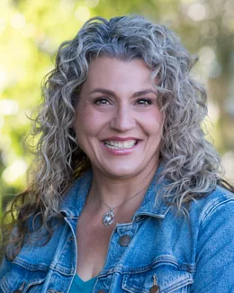

about
Hi, I’m Yvonne.
I spent twenty-six years leading teams and a school, seventeen of them building and leading the school as principal. A school is a dynamic training ground: everyone has a legitimate stake, and the work stays healthy when goals, mission, and values stay aligned. It taught me how to listen into messy problems and build systems strong enough to grow with an organization.
Now I do this work as a consultant, for schools, nonprofits, and growing businesses. I uncover what’s not working, then work with you and your team, guided by data results, on solutions aligning with your goals. If something in your organization feels off and you can’t quite name it, I’d love to talk.
yes, I read every message myself
- 26 years leading teams and a school
- 17 years building and leading a school as principal
- Schools, nonprofits, and growing businesses
in their words
From the leaders I’ve worked with.
“I’d recommend her to any owner who knows something is wrong but can’t see what.”
- 52.7% less workload after the redesign
- +6 points profit margin, even after paying for a consultant
Read Amanda’s full storyShow less
When I brought my business to Yvonne, I knew something was wrong, but I couldn't name what it was. I was tired, doing 100% of the service delivery and admin myself, and I was seriously considering selling. What Yvonne did wasn't just listen — she listened through the noise to figure out what I was actually saying, even when I couldn't articulate it myself. She identified that the real problem was structural: my internal process wasn't sustainable, and no amount of effort was going to fix that without changing the process itself. That was the piece I couldn't see on my own.
She refused to let me throw the business away. Instead, she rebuilt the systems underneath it — first creating infrastructure that let the business run across multiple users, then redesigning the evaluation process itself to be dramatically more efficient. In 2026 alone, that shift cut evaluation time by more than half. We also restructured how services were priced, which strengthened the business's margins.
Six months after we started, I went from 'considering an exit' to confident the business actually works — and works without me having to do everything myself. Yvonne has this rare mix of being able to figure out what people are saying when they don't even know what they're saying themselves, while also building the practical systems to fix it. She doesn't just make a business more efficient — she makes it scalable. I'd recommend her to any owner who knows something is wrong but can't see what.
“Yvonne asked questions nobody had asked us.”
Read the Cliffords’ full storyShow less
When we first started talking with Yvonne about NZone Sports, we had a vision and training, but we were still looking for the right opportunity to put it all into action. We owned a franchise, but we didn’t have a clear focus or path.
Yvonne asked questions nobody had asked us. She found a need for what we offered in home schools before we even knew there was one. As a school leader, she saw what her students were missing, and she brought us in to run an after-school sports program for them. She truly believed her students deserved a physical fitness program. It was the first home school program we ever had. Partnering with home schools had never come up anywhere in our franchise, and it was a refreshing idea.
She did more than bring us in. She brought the program to us. Every time we hit a problem, she had a solution, and she helped us keep it from happening again. Over two years, the partnership gave us revenue, but more importantly, it gave us a baseline. Yvonne’s honest feedback showed us what we were missing: how to group kids by age, how many coaches each group needs, and what has to be in place before we launch. Her feedback became our roadmap, and we’re using it now as we plan what’s next.
More than anything, Yvonne helped us see what NZone could be: a specialized home school program, something the franchise’s curriculum didn’t offer at the time. She’s a problem solver with great ideas. She’s a good listener, she’s open to feedback, and she is patient in the problem-solving process. She told us our shortfalls, and that’s exactly what we needed.
Anyone who works with Yvonne is going to get more than they expect.
who I work with
Is this for you?
Founders and leaders of schools, nonprofits, and growing businesses. Most are at a point where what got them here isn’t carrying them forward, and they can feel it before they can name it.
Let’s find out what’s really going on.
You don’t need a diagnosis before you reach out. Diagnosis is my job. Our first conversation is complimentary.